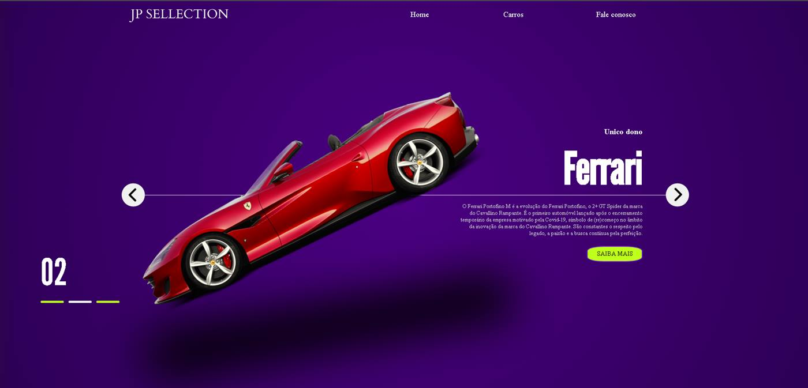
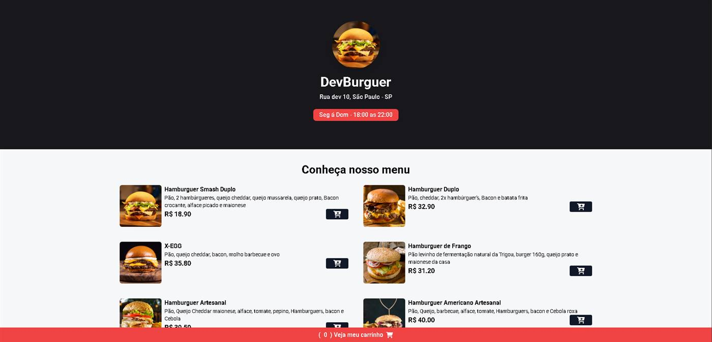
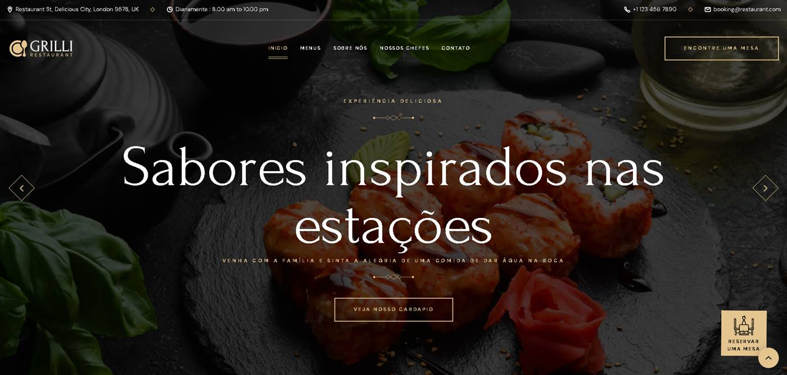
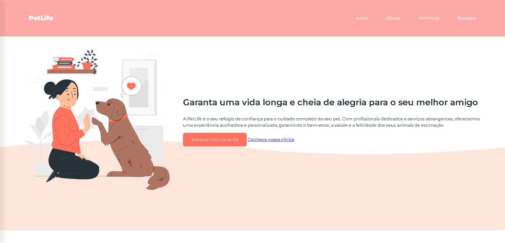
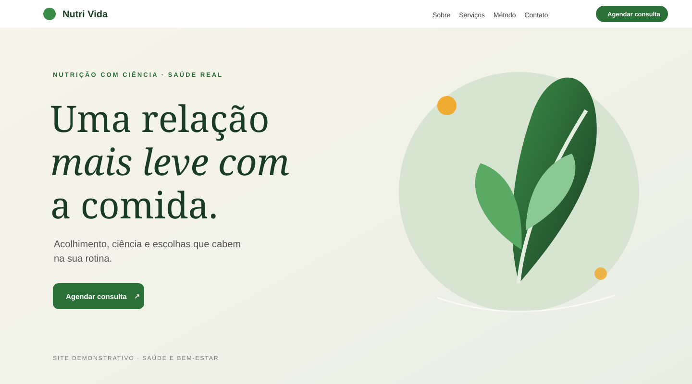

PROJETO DEMONSTRATIVO↗DESENVOLVIMENTO WEB · PORTFÓLIO
Seu negócio merece
um site à altura.
Sou João Pedro. Transformo ideias de pequenos negócios em sites claros, responsivos e feitos para apresentar bem o que você oferece.
↓IDEIA
→ PRESENÇA
→ PRESENÇA
JP
DESIGN COM
PROPÓSITO
✳
PROPÓSITO
PORTFÓLIO2026 — EM CONSTRUÇÃO
UMA SELEÇÃO DE PROJETOS
Feitos para a vida real.
Projetos demonstrativos em áreas onde uma boa presença digital faz diferença.

PROJETO DEMONSTRATIVO↗
PROJETO DEMONSTRATIVO↗
PROJETO DEMONSTRATIVO↗
PROJETO DEMONSTRATIVO↗✳ Os projetos desta seleção são demonstrações de interface e não representam clientes ou resultados comerciais reais.
QUEM ESTÁ POR TRÁS
Design e código,
lado a lado.
Sou João Pedro, desenvolvedor front-end. Crio experiências web com atenção ao visual, à navegação no celular e ao que o cliente precisa encontrar.
Trabalho com HTML, CSS, JavaScript e React, e estou expandindo meus conhecimentos para entregar projetos cada vez mais completos.
Tem uma ideia? Vamos conversar ↗HTML & CSSJAVASCRIPTREACTRESPONSIVIDADE
UM BOM COMEÇO É UMA CONVERSA
Vamos dar forma
à sua ideia?
Conte um pouco sobre o seu negócio e o site que você gostaria de ter.
Enviar um e-mail ↗